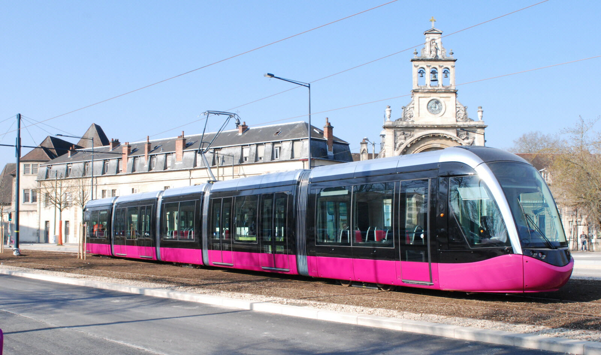
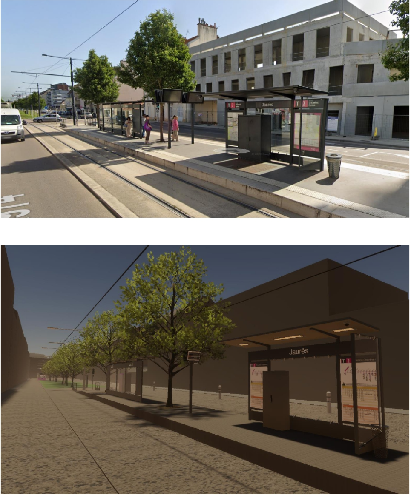
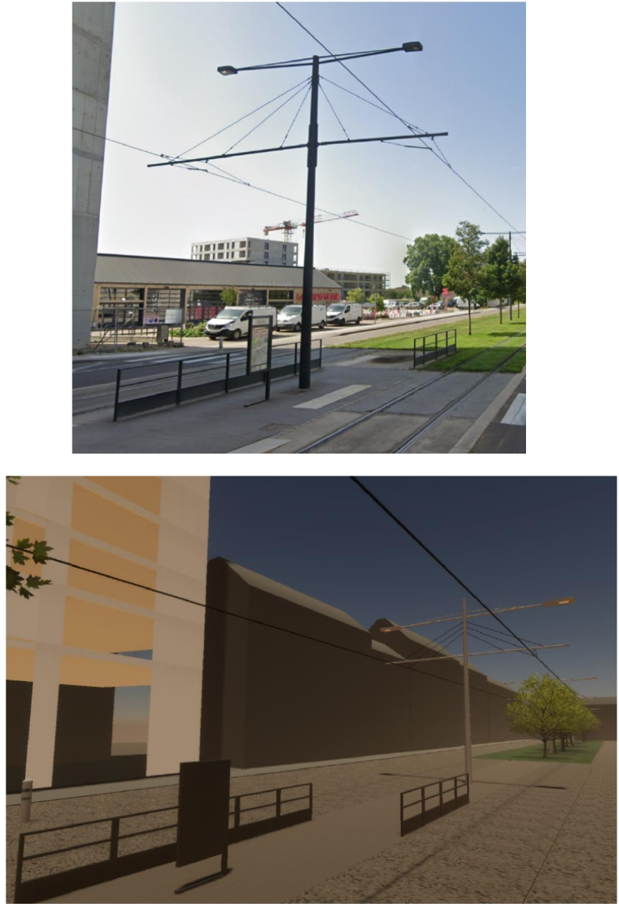
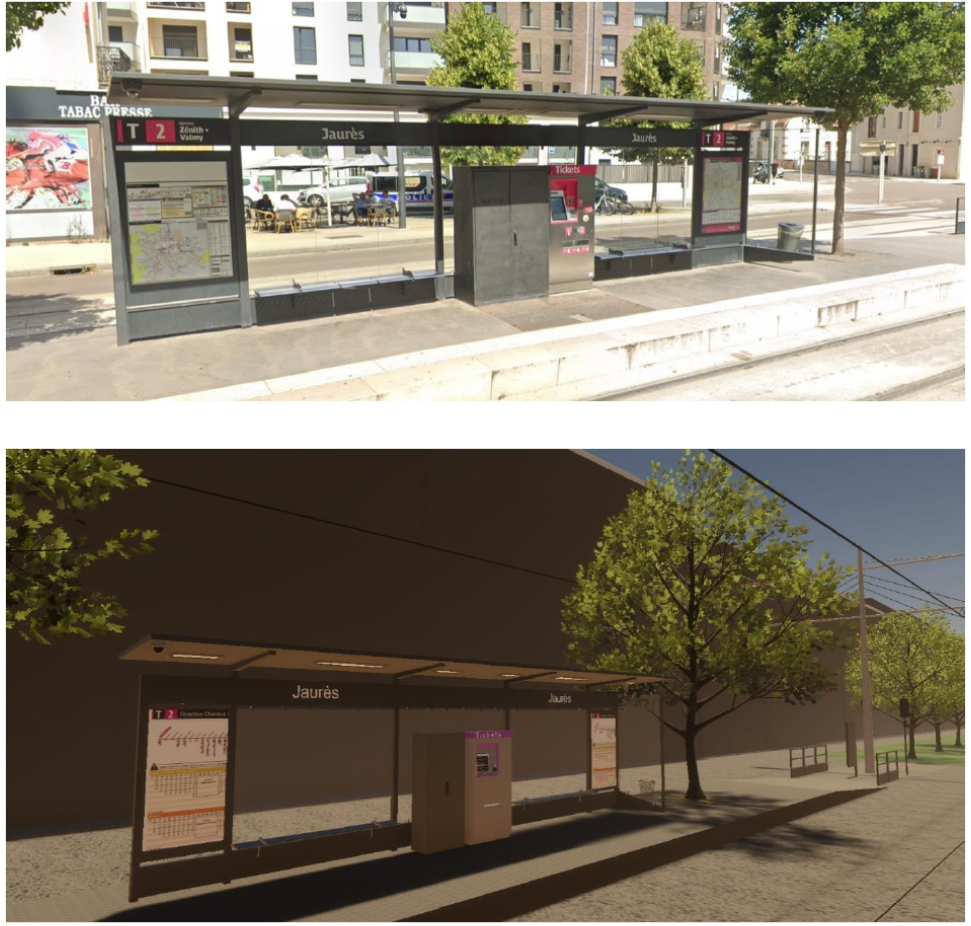
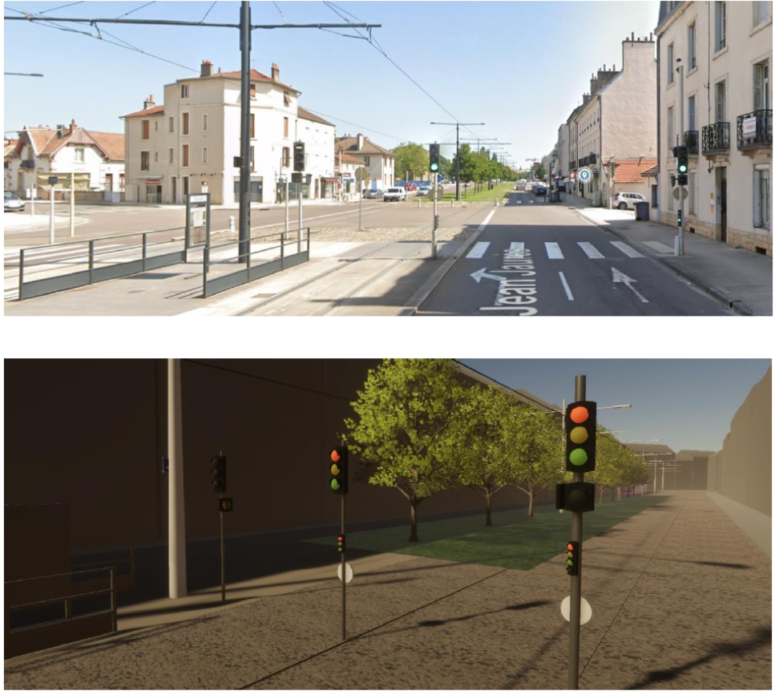
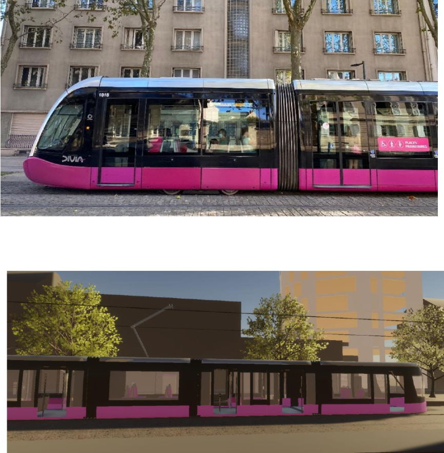
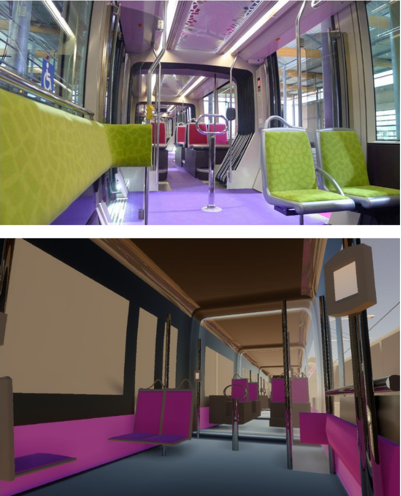
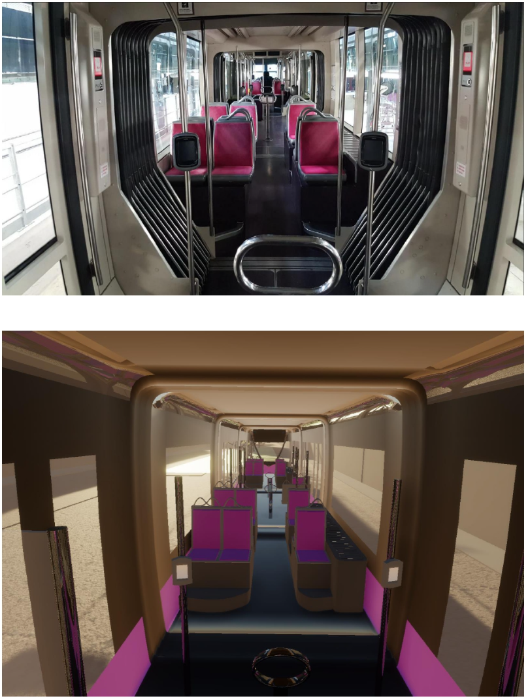

Scratch-built 3D modeling and real-time integration in Unity of the Divia tramway. An animated urban scene illustrating the arrival, station stop, and departure of the tram.

This project was carried out as part of an educational module focused on 3D modeling and real-time rendering integration in Unity.
The objective was to create a real-time animated scene representing the Divia tramway of Dijon in an urban environment. It illustrates the tram's arrival, its stop at the station, the opening of the doors, and its departure.
The modeling was entirely done in 3ds Max and integrated into Unity, aiming to produce a realistic and immersive render without using any external 3D models.
The main challenge was to faithfully recreate the design of the Divia tramway and its urban station from real-world references. Every element was modeled from scratch to ensure visual consistency and scale accuracy of the scene compared to reality.

Achieving an immersive render required extensive work on lighting and post-processing effects within Unity. The challenge was to configure global illumination, reflections, and image treatments (Bloom, Color Grading, Ambient Occlusion) to recreate the authentic atmosphere of the urban environment, while maintaining an optimal framerate for real-time animation.





